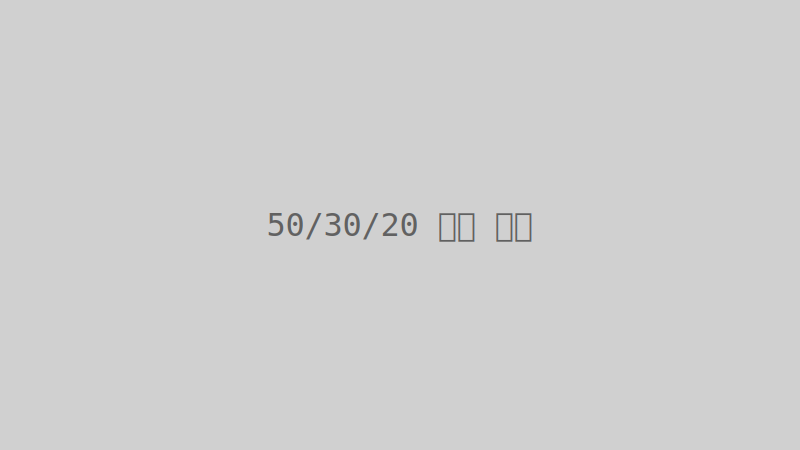

스마트한 재정 관리의 시작: '50/30/20 법칙'으로 생활비 절약하기
매달 들어오는 월급이 어디로 사라지는지 모르겠다고 느끼시나요? 효율적인 재정 관리는 어렵게 느껴질 수 있지만, '50/30/20 법칙'만 알면 누구나 쉽게 시작할 수 있습니다. 이 법칙은 수입의 50%는 필수 지출, 30%는 선택 지출, 20%는 저축 및 부채 상환에 할당하는 간단한 예산 관리 방식입니다. 본 글에서는 이 법칙의 자세한 내용과 함께, 저희 블로그의 '월 생활비 계산기'를 활용하여 여러분의 수입에 맞춰 이 법칙을 적용하는 구체적인 방법을 알려드립니다. 재정 독립을 향한 첫걸음, 지금 바로 내딛어 보세요!
1. '50/30/20 법칙'이란 무엇인가요?
'50/30/20 법칙'은 미국의 파산법 전문 변호사이자 정치인인 엘리자베스 워런 교수가 고안한 재정 관리의 황금률입니다. 총 세후 소득을 세 가지 주요 범주로 나누어 예산을 배분하는 아주 간단하면서도 강력한 방법이죠. 이 법칙을 따르면 불필요한 소비를 줄이고 저축과 투자를 늘려 재정 건전성을 확보하는 데 큰 도움을 받을 수 있습니다.
- 50% - 필수 지출 (Needs): 주거비(월세/대출금), 공과금(전기, 가스, 수도, 통신비), 식비(생필품), 교통비, 보험료 등 삶을 유지하는 데 꼭 필요한 고정적인 지출입니다.
- 30% - 선택 지출 (Wants): 외식비, 취미 활동비, 의류비, 여행 경비, 영화/콘서트 관람비 등 삶의 질을 높이고 만족감을 주는 유동적인 지출입니다. 없어도 생활에 지장은 없지만, 삶을 더 풍요롭게 만드는 데 기여하는 항목들이죠.
- 20% - 저축 및 부채 상환 (Savings & Debt Repayment): 비상 자금 저축, 은퇴 자금 투자, 학자금 대출이나 신용카드 대금과 같은 부채 상환에 사용되는 금액입니다. 미래를 위한 준비이자 재정적 자유를 얻기 위한 핵심 요소입니다.
2. '50/30/20 법칙'을 효과적으로 적용하는 방법
- 세후 소득 파악하기: 가장 먼저 해야 할 일은 매달 손에 들어오는 정확한 세후 소득을 아는 것입니다. 연봉이 아닌 실제 수령액을 기준으로 해야 합니다.
- 지출 항목 분류하기: 지난 몇 달간의 지출 내역을 확인하여, 각 지출 항목이 '필수 지출', '선택 지출' 중 어디에 속하는지 분류합니다. 이때 필수 지출 비중이 50%를 넘는다면, 어떤 부분에서 지출을 줄일 수 있을지 고민해야 합니다.
- 예산 계획 세우기: 분류된 지출 항목을 바탕으로 50/30/20 비율에 맞춰 월별 예산을 세웁니다.
- 저희 블로그의 '월 생활비 계산기' 활용하기: 저희 블로그의 '월 생활비 계산기'에 고객님의 수입과 지출 항목들을 입력하여 '50/30/20 법칙'에 따른 이상적인 지출 비율과 현재 고객님의 재정 상태를 비교 분석해볼 수 있습니다. 이를 통해 어떤 부분에서 개선이 필요한지 시각적으로 쉽게 파악할 수 있습니다.
- 정기적인 검토 및 조정: 한 번 세운 예산은 고정된 것이 아닙니다. 매달 또는 분기별로 예산 사용 내역을 검토하고, 생활 패턴이나 목표에 맞춰 유연하게 조정하는 것이 중요합니다.
3. '50/30/20 법칙' 적용 시 주의사항
- 유연성 유지: 이 법칙은 가이드라인일 뿐, 개인의 상황에 따라 비율을 약간 조정할 수 있습니다. 중요한 것은 균형 잡힌 소비와 저축 습관을 만드는 것입니다.
- 부채 상환 우선: 고금리 부채(예: 신용카드 리볼빙)가 있다면, 20% 저축 비중에서 부채 상환을 우선순위에 두는 것이 좋습니다.
- 점진적인 변화: 처음부터 완벽하게 법칙을 따르기 어렵다면, 점진적으로 목표 비율에 맞춰나가는 것을 목표로 하세요. 작은 변화가 큰 결과를 만듭니다.
'50/30/20 법칙'은 복잡한 재테크 지식 없이도 누구나 쉽게 재정 건전성을 확보하고 재정적 자유를 향해 나아갈 수 있는 강력한 도구입니다. 지금 바로 고객님의 수입에 이 법칙을 적용하고, 더 스마트하고 풍요로운 미래를 계획해보세요!